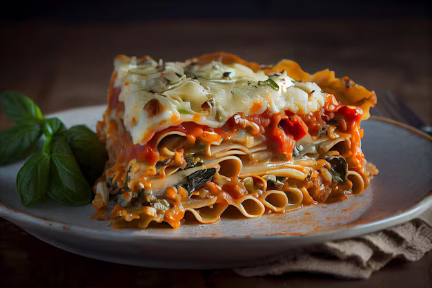

Lasagna

Description
Lasagna is a hearty Italian dish made by layering sheets of pasta with rich meat sauce, creamy béchamel or ricotta cheese, and plenty of melted mozzarella. Each layer is baked to perfection, creating a comforting, cheesy, and flavorful meal that’s perfect for feeding a crowd. It's a classic comfort food that combines savory flavors and satisfying textures in every bite.
Ingredients
- Lasagna noodles
- Ground beef
- Onion & garlic
- Tomato sauce
- Ricotta or béchamel
- Mozzarella & Parmesan cheese
- Olive oil
- Salt, pepper, Italian herbs (optional)
Steps
- Pat steak dry, season with salt and pepper.
- Heat oil in a hot pan until shimmering.
- Sear steak 2/3 minutes per side (for medium-rare), depending on thickness.
- Add butter, garlic, and herbs, baste steak for 1/2 minutes.
- Remove from pan, let rest 5 minutes before serving.
Home